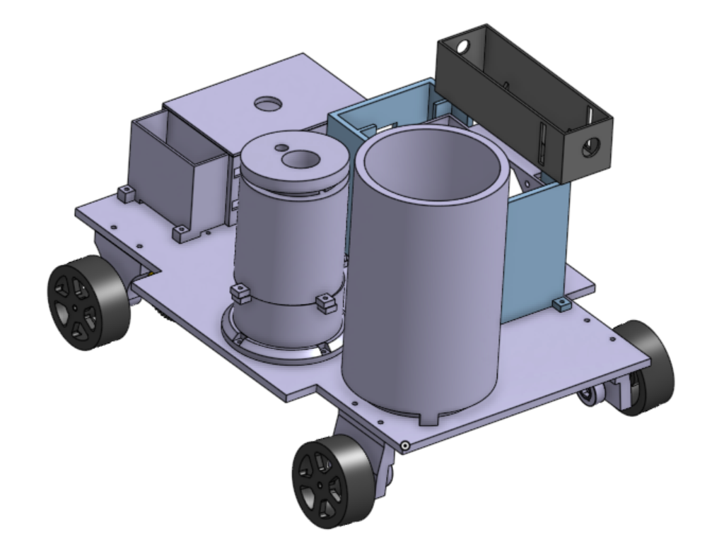
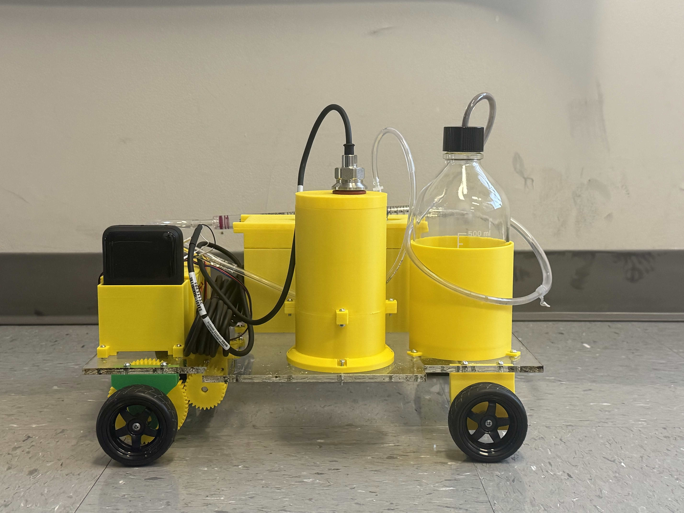
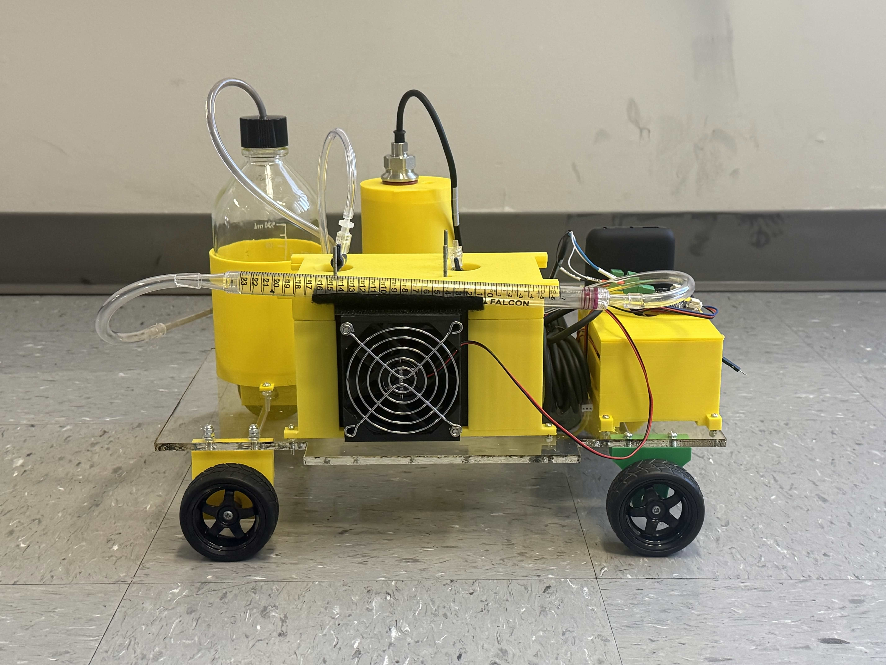

September 2025 – Present
Focus: Manufacturing and supporting assembly objectives for rover components.
Role: Manufacturing team member (collaboration across subteams).
What I did
Tools / Skills
SolidWorks Fusion 360 CAM CNC Machining Lathe Laser Cutting Manufacturing Collaboration
(Optional next: add 1–2 photos of parts you machined + one measurable result like tolerance achieved, quantity produced, or cycle-time improvement.)
Back to topRole: Mechanical Team Member | June 2025 – Present
Skills & Tools: SolidWorks, 3D Printing, Mechanical Fabrication, CAD, Systems Integration
Design and integrate the mechanical systems—including the chassis, powertrain, and battery enclosures—for a competition-ready chemically powered vehicle.

Using SolidWorks, I modeled the vehicle's core structural components, ensuring precise spatial packaging for the chemical reaction housings. I coordinated heavily with the electrical subteam to optimize wiring layouts, PCB placement, and motor integration within the physical constraints of the chassis.


The final components were manufactured using a combination of 3D printing and mechanical fabrication to meet strict competition weight and safety constraints.
Previous iterations of the vehicle suffered from a persistent drift issue that negatively affected competition scoring. I analyzed the steering and alignment geometry, redesigning the component interfaces to ensure straight-line tracking. This mechanical overhaul significantly improved the vehicle's predictability and overall performance.
Back to topMarch 2025 – June 2025
Focus: Mechanical design of a drone frame + housings, plus fabrication and fit-up.
Role: Lead mechanical engineer.
What I did
Tools / Skills
SolidWorks Laser Cutting 3D Printing Design Iteration Mechanical Integration
(Optional next: add a short “Lessons learned” bullet list — fit tolerance, fast iteration, weight vs stiffness tradeoffs.)
Back to top